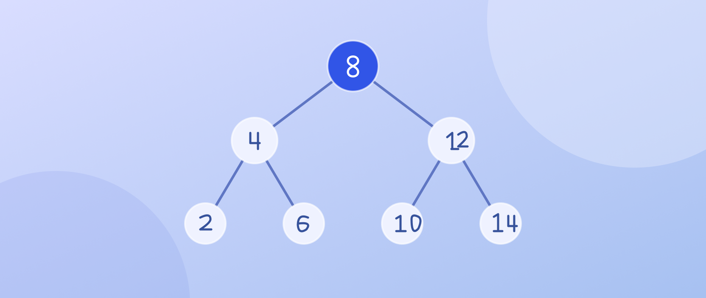

Владислав Лоиков
Студент программной инженерии в СКФУ. Изучаю алгоритмы, веб-разработку и анализ данных.
Учебные проекты
Практика, в которой я разбираюсь в новых технологиях.
Что сейчас изучаю
Kotlin
Алгоритмы и структуры данных
Python
Анализ данных и поиск разладок
Frontend
HTML, CSS и интерфейсы
Знакомство
Учёба и интересы
Моё направление
Я студент первого курса СКФУ, группа ПИЖ-б-о-26-1. Моё направление — «Программная инженерия», профиль — «Инженерия сложных программных систем» .
Мне интересны Kotlin, Python, Linux и веб-разработка. Подробнее обо мне можно прочитать в биографии, а о том, что я изучаю, — в разделе «Навыки».
Мне интересно понимать, как устроены программы: от алгоритмов и структур данных до взаимодействия сервисов.
Навигация
Что есть на сайте
Начать знакомство можно с любого раздела:
- Учебные проекты — алгоритмы, структуры данных и работа с Python.
- Друзья — люди, с которыми я учусь и работаю над проектами.
- Увлечения — программирование, музыка и катание на коньках.
- Моя группа — однокурсники и направление подготовки.
- Безопасность сложных систем — выбранная мной профильная тема.